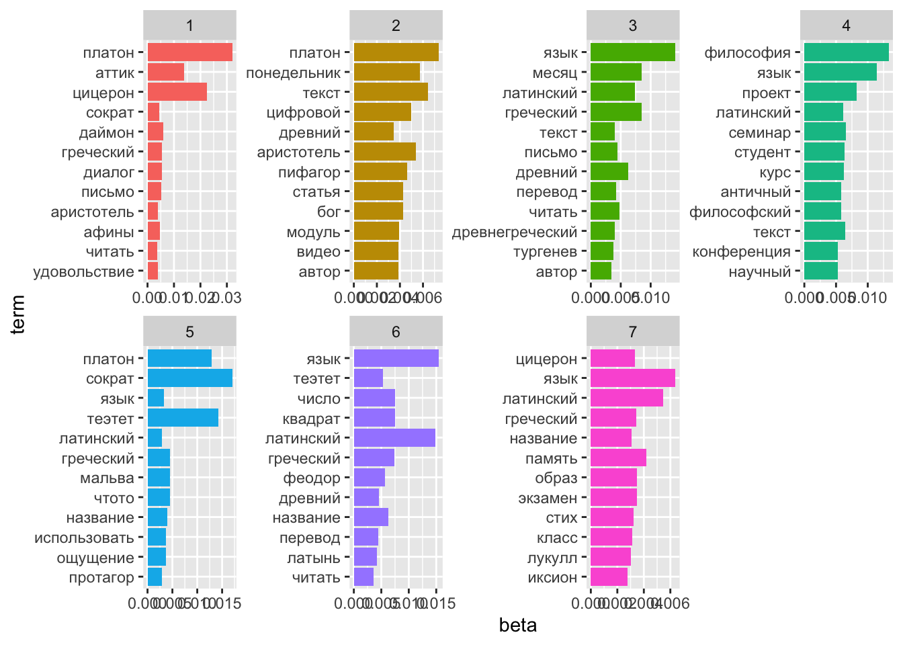
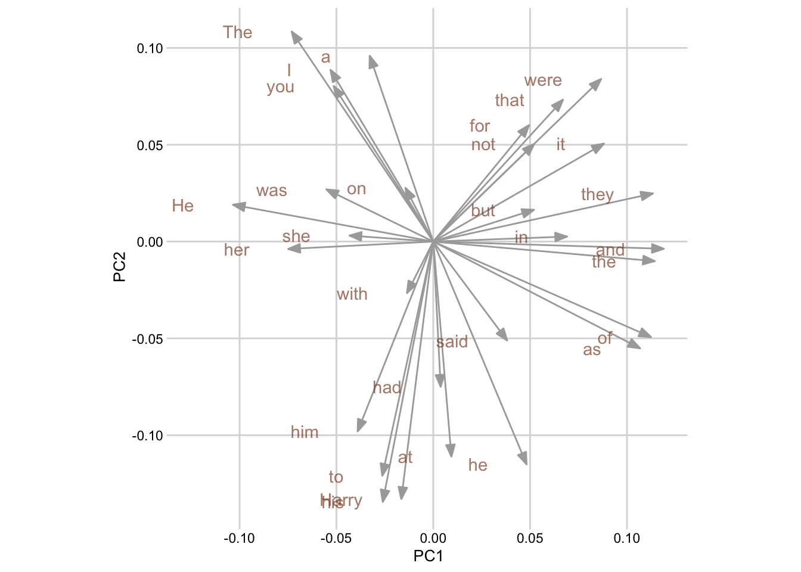

Тема 17 Анализ сетей
Сети интересны своими паттернами взаимосвязей и тем, как эти паттерны влияют на участников сети.
Люк (2017)
В качестве участников сети можно рассматривать не только людей, но и, например, понятия. Пример подобного исследования см. в работе Б.В. Орехова “В сети терминов М. М. Бахтина: теория графов о диалоге, карнавале и хронотопе”. Узлами сети при таком моделировании становятся прежде всего важнейшие для системы автора термины, а сам граф отражает их взаимное функционирование в тексте. В частности, как показало это исследование, “кажущийся конструктивно важным элементом терминологической системы Бахтина хронотоп … на самом деле обладает минимумом связей (в терминах сетевого анализа число связей узла называется степенью) внутри графа”.
Мы попробуем провести похожее исследование, но за основу возьмем латинский текст “Исповеди” Августина.
17.1 От conllu к совместной встречаемости
Файлы “Исповеди” уже с размеченными частями речи, проверенный вручную, доступен в репозитории на GitHub. Эти файлы я заранее скачала в рабочую директорию курса.
## [1] "Augustinus_Confessiones_Liber1.tsv.conllu"
## [2] "Augustinus_Confessiones_Liber10.tsv.conllu"
## [3] "Augustinus_Confessiones_Liber11.tsv.conllu"
## [4] "Augustinus_Confessiones_Liber12.tsv.conllu"
## [5] "Augustinus_Confessiones_Liber13.tsv.conllu"
## [6] "Augustinus_Confessiones_Liber2.tsv.conllu"
## [7] "Augustinus_Confessiones_Liber3.tsv.conllu"
## [8] "Augustinus_Confessiones_Liber4.tsv.conllu"
## [9] "Augustinus_Confessiones_Liber5.tsv.conllu"
## [10] "Augustinus_Confessiones_Liber6.tsv.conllu"
## [11] "Augustinus_Confessiones_Liber7.tsv.conllu"
## [12] "Augustinus_Confessiones_Liber8.tsv.conllu"
## [13] "Augustinus_Confessiones_Liber9.tsv.conllu"Сначала их нужно прочитать.
## [1] "./files/augustinus/Augustinus_Confessiones_Liber1.tsv.conllu"
## [2] "./files/augustinus/Augustinus_Confessiones_Liber10.tsv.conllu"
## [3] "./files/augustinus/Augustinus_Confessiones_Liber11.tsv.conllu"
## [4] "./files/augustinus/Augustinus_Confessiones_Liber12.tsv.conllu"
## [5] "./files/augustinus/Augustinus_Confessiones_Liber13.tsv.conllu"
## [6] "./files/augustinus/Augustinus_Confessiones_Liber2.tsv.conllu"library(tidyverse)
library(purrr)
confessions_ann <- map_df(filenames, udpipe_read_conllu)
confessions_ann <- confessions_ann %>%
select(-doc_id, -paragraph_id, -xpos, -feats, -head_token_id, -dep_rel, -deps, -misc)
head(confessions_ann)## sentence_id sentence
## 1 Augustinus_Confessiones_Liber1-1 magnus es , domine , et laudabilis valde .
## 2 Augustinus_Confessiones_Liber1-1 magnus es , domine , et laudabilis valde .
## 3 Augustinus_Confessiones_Liber1-1 magnus es , domine , et laudabilis valde .
## 4 Augustinus_Confessiones_Liber1-1 magnus es , domine , et laudabilis valde .
## 5 Augustinus_Confessiones_Liber1-1 magnus es , domine , et laudabilis valde .
## 6 Augustinus_Confessiones_Liber1-1 magnus es , domine , et laudabilis valde .
## token_id token lemma upos
## 1 1 magnus magnus ADJ
## 2 2 es sum AUX
## 3 3 , , PUNCT
## 4 4 domine dominus NOUN
## 5 5 , , PUNCT
## 6 6 et et CCONJТеперь можно посчитать совместную встречаемость, например, в рамках одного предложения. Для удобства визуализации я выберу только существительные, которые встречаются чаще 5 раз.
confessions_words <- confessions_ann %>%
filter(upos == "NOUN") %>%
group_by(lemma) %>%
add_count() %>%
filter(n > 5) %>%
select(-n)
confessions_words## # A tibble: 11,274 × 6
## # Groups: lemma [431]
## sentence_id sentence token_id token lemma upos
## <chr> <chr> <chr> <chr> <chr> <chr>
## 1 Augustinus_Confessiones_Liber1-1 magnus es , domi… 4 domi… domi… NOUN
## 2 Augustinus_Confessiones_Liber1-2 magna virtus tua… 2 virt… uirt… NOUN
## 3 Augustinus_Confessiones_Liber1-2 magna virtus tua… 5 sapi… sapi… NOUN
## 4 Augustinus_Confessiones_Liber1-2 magna virtus tua… 9 nume… nume… NOUN
## 5 Augustinus_Confessiones_Liber1-3 et laudare te vu… 5 homo homo NOUN
## 6 Augustinus_Confessiones_Liber1-3 et laudare te vu… 9 crea… crea… NOUN
## 7 Augustinus_Confessiones_Liber1-3 et laudare te vu… 13 homo homo NOUN
## 8 Augustinus_Confessiones_Liber1-3 et laudare te vu… 19 test… test… NOUN
## 9 Augustinus_Confessiones_Liber1-3 et laudare te vu… 20 pecc… pecc… NOUN
## 10 Augustinus_Confessiones_Liber1-3 et laudare te vu… 23 test… test… NOUN
## # ℹ 11,264 more rowsТеперь можно составить матрицу совместной встречаемости (и убрать редкие пары).
## # A tibble: 264 × 3
## term1 term2 value
## <chr> <chr> <dbl>
## 1 caelum terra 274
## 2 animus memoria 55
## 3 dies nox 48
## 4 caelum principium 47
## 5 dominus homo 45
## 6 spatium tempus 44
## 7 nomen terra 44
## 8 anima corpus 43
## 9 imago memoria 43
## 10 principium terra 43
## # ℹ 254 more rows17.2 Граф слов с igraph
При создании графа уточним, что связи носят ненаправленный характер.
## IGRAPH 5b1f5ec UN-- 102 264 --
## + attr: name (v/c), value (e/n)
## + edges from 5b1f5ec (vertex names):
## [1] caelum --terra animus --memoria dies --nox
## [4] caelum --principium dominus --homo spatium --tempus
## [7] nomen --terra anima --corpus imago --memoria
## [10] principium--terra caelum --nomen corpus --sensus
## [13] materia --terra homo --uita abyssus --terra
## [16] dominus --deus anima --uita caelum --materia
## [19] homo --uerbum caelum --aqua caelum --creatura
## [22] aqua --terra creatura --terra dies --terra
## + ... omitted several edgesПопробуем изобразить (хотя для больших графов лучше строить интерактивную модель, в этом уроке наc больше интересует анализ связей, а не их визуализация).
library(ggraph)
ggraph(confessions_graph, layout = "fr") +
geom_edge_link(aes(edge_alpha = value)) +
geom_node_point(color= "lightblue", size = 2) +
geom_node_text(aes(label = name, repel=T), vjust = 1, hjust = 1) +
theme_void() ## Интерактивный график
## Интерактивный график
Очень просто, но не очень смотрибельно.
Можно чуть усложнить54; код ниже, а результат смотрим здесь.
17.3 Важность узлов
Важность (prominence) участника (актора, вершины, узла) определяется его положением внутри сети. Применительно к ненаправленным сетям говорят о центральности (центральный актор вовлечен в наибольшее количество связей, прямых или косвенных), а применительно к направленным – о престиже. Престижный актор характеризуется большим количеством входящих связей.
Центральность по степени (degree centrality) определяется количеством связи: чем больше прямых связей, тем более важным является узел.
## homo terra caelum corpus dominus tempus uerbum anima uita res
## 40 36 30 24 23 21 18 16 16 14Центральным понятием по степени для “Исповеди” является “человек”. Это слово имеет максимальное число связей.
Центральность по близости (closeness centrality) говорит о том, насколько близко узел расположен к другим узлам сети. Центральность по близости – это величина, обратная сумме расстояний от узла i до всех остальных узлов сети.
## cantus sonus homo terra caelum corpus
## 1.000000000 1.000000000 0.005813953 0.005649718 0.005434783 0.005347594
## tempus dominus uerbum res
## 0.005291005 0.005263158 0.005128205 0.004975124Если обратиться к интерактивному графу, можно заметить, что cantus и sonus представляют собой отдельную компоненту. Собственно, только они туда и входят.
## membership
## 1 2
## 100 2Поэтому уточним, что центральность по близости должна считаться для большей компоненты.
confessions_subgraph = induced_subgraph(confessions_graph,
which(membership == 1))
closeness <- closeness(confessions_subgraph)
sort(closeness, decreasing = T)[1:10]## homo terra caelum corpus tempus dominus
## 0.005813953 0.005649718 0.005434783 0.005347594 0.005291005 0.005263158
## uerbum res anima uita
## 0.005128205 0.004975124 0.004926108 0.004901961И снова на первом месте “человек”.
Центральность по посредничеству (betweenness centrality) характеризует, насколько важную роль данный узел играет на пути “между” парами других узлов сети.
## homo terra caelum corpus dies tempus dominus uerbum
## 1476.0830 1055.3757 740.4504 619.8684 548.6346 515.2094 439.5217 414.5475
## spatium memoria
## 325.8159 312.0012Существуют и другие меры центральности, такие как центральность по собственному вектору, центральность по информации, и др.
17.4 Централизация
Централизация характеризует сеть в целом. Рассмотрим два крайних случая: кругой граф и звездчатый граф.
star_g <- graph.formula(a--b, a--c, a--d, a--e)
circle_g <- graph.formula(a--b, b--c, c--d, d--e, a--e)
par(mfrow = c(1, 2))
plot(circle_g, vertex.color=2)
plot(star_g, vertex.color=3)
В случае звездчатого графа централизация максимальна, а для отдельных узлов наблюдается разброс центральности.
## $res
## [1] 1.0000000 0.5714286 0.5714286 0.5714286 0.5714286
##
## $centralization
## [1] 1
##
## $theoretical_max
## [1] 1.714286Во втором случае наборот – разброса нет, а для графа в целом централизация минимальна.
## $res
## [1] 0.6666667 0.6666667 0.6666667 0.6666667 0.6666667
##
## $centralization
## [1] 0
##
## $theoretical_max
## [1] 1.714286Расчитаем централизацию для графа со словами из “Исповеди”.
## [1] "res" "centralization" "theoretical_max"## [1] 1.24076317.5 Центральность на графике
График сети, который включает в себя информацию о важности конкретных узлов, может быть эффективным инструментом анализа и визуализации. (Изменение формы на 21 нужно, чтобы можно было контур и заливку узла сделать разными цветами).
ggraph(confessions_graph, layout = "fr") +
geom_edge_link(aes(edge_alpha = value)) +
geom_node_point(fill = "lightblue",
color= "grey30",
size = log2(degrees) * 3,
alpha = 0.5,
shape = 21) +
geom_node_text(aes(label = name, repel=T), vjust = 1, hjust = 1) +
theme_void()## Warning in geom_node_text(aes(label = name, repel = T), vjust = 1, hjust = 1): Ignoring unknown aesthetics:
## repel
17.6 Интерактивный график 2
Создадим интерактивный график (результат по ссылке выше).
#install.packages("visNetwork")
library(visNetwork)
data <- toVisNetworkData(confessions_graph)
# масштабированная центральность узла
data$nodes$value <- log(degrees)*3
confessions_3d <- visNetwork(nodes = data$nodes,
edges = data$edges,
width = "100%",
height = 800)Настраиваем и сохраняем график.
17.7 Точки сочленения
Точка сочленения – это узел, при удалении которого увеличивается число компонент связности. Таким образом, они соединяют разные части сети. При их удалении акторы (узлы, вершины) не могут взаимодействовать друг с другом.
## + 16/102 vertices, named, from 5b1f5ec:
## [1] uita uox caro uerbum ueritas tempus sol memoria imago
## [10] homo anima terra animus spatium annus diesНапример, oblivio и expectatio связаны с остальным графом только через “память”.
17.8 Подгруппы
Многие сети состоят из относительно плотных подгрупп, которые соединены между собой менее крепкими связями. Один из способов взглянуть на подгруппы сети заключается в исследовании социальной сплочености (cohesion). Сплоченные подгруппы - это множество акторов, которые объединены между собой посредством многочисленных, сильных и прямых связей.
17.8.1 Клики
Клика – один из самых простых типов сплоченных подгрупп; это максимально полный подграф, т.е. подмножество узлов со всеми возможными связями между ними.
Толковые словари понимают слово иначе. КЛИКА, -и; ж. [от франц. clique - шайка, банда] Неодобр. Группа, сообщество людей, стремящихся к достижению каких-л. корыстных, неблаговидных целей. Придворная к. К. финансовых дельцов. Фашистская к.
Вопреки своему названию, функция clique.number возвращает размер наибольшей клики:
## [1] 7## [[1]]
## + 7/102 vertices, named, from 5b1f5ec:
## [1] caelum dominus homo terra tempus res uerbum
##
## [[2]]
## + 7/102 vertices, named, from 5b1f5ec:
## [1] caelum dominus corpus homo terra tempus resИли, что то же самое:
## [[1]]
## + 7/102 vertices, named, from 5b1f5ec:
## [1] uerbum homo terra tempus res dominus caelum
##
## [[2]]
## + 7/102 vertices, named, from 5b1f5ec:
## [1] res corpus tempus terra homo dominus caelumНо клика – это очень строгое определение сплоченной группы. Например, чтобы подграф, состоящий из 7 вершин, считался кликой, нужно, чтобы между ними было проведено \((7 \cdot 6) / 2 = 21\) связей. Если хотя бы одно ребро отсутствует, то условие не выполняется. Такие клики просто очень редко встречаются.
17.9 K-ядра
Популярным определением социальной сплоченности является k-ядро (k-core). Это максимальный подграф, в котором каждая вершина связана минимум с k другими вершинами этого же подграфа. K-ядра имеют множество преимуществ:
- они вложены друг в друга (каждый участник 4-ядра является также участником 3-ядра и т.д.);
- они не перекрываются;
- их легко определить.
Для определения k-ядерной структуры используется функция graph.coreness():
## caelum animus dies dominus spatium nomen
## 7 5 4 7 4 4Посчитаем количество вершин в ядрах.
## coreness
## 1 2 3 4 5 6 7
## 34 17 14 14 10 2 111-ядро содержит 34 вершины, 2-ядро содержит 17 вершин, и т.д.
Для лучшей интерпретации k-ядерной структуры мы можем графически изобразить сеть, используя информацию о множестве k-ядер. Для начала добавим информацию о цвете к атрибутам узлов. Сейчас, как можно убедиться, в списке атрибутов хранятся только имена:
## [1] "name"## [1] "name" "color"ggraph(confessions_graph, layout = "fr") +
geom_edge_link(edge_alpha = 0.2) +
geom_node_point(aes(fill = as.factor(color)),
color= "grey30",
size = log2(degrees) * 4,
alpha = 0.5,
shape = 21) +
geom_node_text(aes(label = name), vjust = 1, hjust = 1) +
theme_void()Сейчас граф не очень читается, но видно, что в центре находятся ядра наивысшей степени. В данном случае речь идет о 7-ядре, которому принадлежит 11 узлов. Т.е. из этих 11 узлов каждое связано не менее чем с 7 другими участниками группы.
Чтобы глубже исследовать подгруппы, последовательно удаляют k-ядра более низкой степени. Для этого можно воспользоваться функцией induced_subgraph().
confessions3_7 <- induced_subgraph(confessions_graph, vids=which(coreness > 2))
ggraph(confessions3_7, layout = "fr") +
geom_edge_link(edge_alpha = 0.2) +
geom_node_point(aes(fill = as.factor(color)),
color= "grey30",
size = 4,
alpha = 0.5,
shape = 21) +
geom_node_text(aes(label = name), vjust = 1, hjust = 1) +
theme_void() При интерпретации важно помнить, что ядра являются вложенными!
При интерпретации важно помнить, что ядра являются вложенными!
confessions6_7 <- induced_subgraph(confessions_graph, vids=which(coreness > 5))
ggraph(confessions6_7, layout = "fr") +
geom_edge_link(edge_alpha = 0.2) +
geom_node_point(aes(fill = as.factor(color)),
color= "grey30",
size = 4,
alpha = 0.5,
shape = 21) +
geom_node_text(aes(label = name), vjust = 1, hjust = 1) +
theme_void()